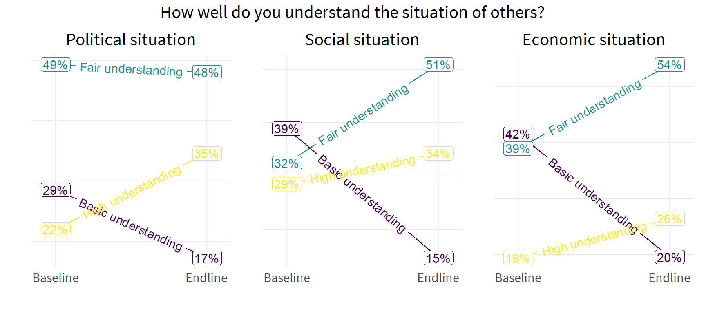

The MSI Data Science Team hosts weekly office hours to provide analytical support to MSI staff, which occasionally includes a series of short demonstrations of specific analytical techniques that MSI staff have utilized to meet a client deliverable, or otherwise strengthen client service. These demonstrations are geared to an audience of R users with at least basic proficiency in data manipulation and visualization. However, anyone with a general interest in data analysis and visualization should be able to follow this demonstration conceptually, and perhaps still be able to tie some lines of code to the visualization feature they create.
The following demonstration explores a specific data visualization tactic using the R package ‘geomtextpath’.
Background
There are common situations where MSI is tasked with ongoing data collection and evaluation of a client activity. For example, the MENA MELS activity (2020-2024) was tasked with ongoing monitoring and evaluation of the Middle East Partnership for Peace Activity (MEPPA). MEPPA comprised grants to several local partners organized around the common motif of building bonds between different demographic groups. The primary outcome of interest was whether or not a participant in the grant activity reported a perceived increase in understanding the political, social, and economic situation and viewpoints of another group. Data were collected on a rolling basis across several implementing partners, across baseline and endline. That data are summarized as follows:
For purposes of client reporting, there are three ordinal responses across baseline and endline, for each of three types of viewpoint. There is insufficient data to conduct inferential tests at this level of granularity, but this data may be visualized descriptively.
The geomtextpath package offers the functionality to directly label line-based plots with text that is able to follow a curved path. Simply replace ‘geom_line’ with ‘geom_textpath’ and assign the variable to use as the label. The following figures illustrate.
Given that the three types of understanding of others’ situation are highly correlated, it makes sense to present these measures compactly as aspects of a deeper underlying construct. The patchwork library allows multiple ggplots to be assembled together as a single plot. The following figure illustrates.
pol + soc + ec +plot_annotation(title="How well do you understand the situation of others?")

A final use of presenting the data more compactly is to collapse the ordinal responses to binary, and collect the three measures as lines in a single plot. The following data captures each type of understanding as either fair or high understanding as one category, and basic understanding as the other category.
dat <-read_csv("data/short demo series/meppa item ladder.csv",show_col_types=F)dat_flx <- dat %>%flextable() %>%autofit() dat_flx
endline
n
perc
item
0
55
0.714
Political situation
1
86
0.827
Political situation
0
47
0.610
Social situation
1
87
0.853
Social situation
0
45
0.584
Economic situation
1
82
0.804
Economic situation
With this simplified data summary, the trendline for each type of understanding may now be collected in a single plot.
Note further the use of secondary axis breaks to illustrate the change score for each trendline from baseline to endline.
Conclusion
The R computing language allows for several ways to customize the use of labels in statistical or descriptive graphics. This short demo has illustrated MSI’s use of the geomtextpath package to place labels directly along the line or curve of a plot. This illustration used only straight lines between two points in time. For additional use cases of the geomtextpath package, see the package vignette.